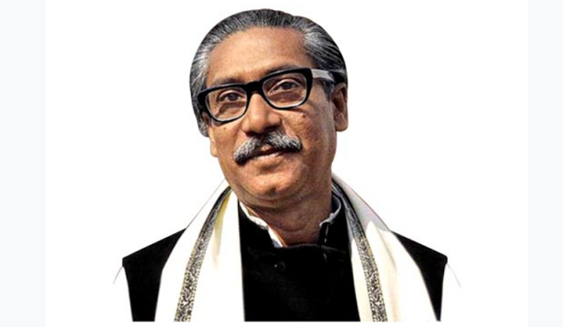

Bangabandhu Sheikh Mujibur Rahman
17th March 1920 - 15th August 1975
Father Of The Nation Of Bangladesh
Bangabandhu Sheikh Mujibur Rahman (1920-1975) is the architect of independent Bangladesh. Born on 17 March 1920 in the village Tungipara under the Gopalganj Sub-division (currently district) in the district of Faridpur, Sheikh Mujibur Rahman’s father, Sheikh Lutfar Rahman, was a serestadar in the civil court of Gopalganj. Sheikh Mujibur Rahman passed his matriculation from Gopalganj Missionary School in 1942, IA (Twelfth Grade) from Islamia College, Calcutta in 1944 and BA from the same College in 1947. In 1946, Mujib was elected general secretary of the Islamia College Students Union. He was an activist of the Bengal Provincial Muslim League and a member of the All-India Muslim League Council from 1943 onwards
Biographies
- Bangabandhu Sheikh Mujibur Rahman was born on March 17, 1920 in a noble Muslim family in Tungipara village of Gopalganj subdivision (now district) of Faridpur district.
- In 1927, he started studying at Gimadanga Primary School at the age of 7.
- In 1934, at the age of 14, he was diagnosed with beriberi, one of his eyes was operated on in Calcutta, and his education was interrupted due to ophthalmology.
- In 1937, Sheikh Mujib re-admitted to school after his education was interrupted for four years due to eye disease.
- In 1938, at the age of 18, Bangabandhu and Begum Fazilatunnecha were officially married.
- In 1939, Undivided Bengal Chief Minister Sher Bangla AK Fazlul Haque and Hossain Shaheed Sohrawardy came to visit Gopalganj Missionary School and Bangabandhu raised the demand of the school students to repair the roof of the school and dormitory.
- In 1940, Sheikh Mujib joined the Bharat Muslim Students Federation and was elected a councilor of the Bengal Muslim Students Federation for a year. He was appointed Secretary of Gopalganj Muslim Defense Committee.
- In 1942, he passed S.Sc. Admitted to intermediate class in humanities department at Calcutta Islamia College.
- In 1943, engaged in active politics and was elected councilor of the Muslim League.
- In 1944, he attended the conference of Bengal Muslim Chhatra League held in Kushtia and played an important role. He was elected as the Secretary of Faridpur District Association, an organization of residents of Faridpur, Kolkata.
- In 1946, Bangabandhu was elected General Secretary (GS) of Islamia College Students' Union.
- In 1947, he passed BA from Islamia College under Kolkata University. When India was partitioned and Pakistan was established, he played a leading role in anti-riot activities in Kolkata.
- In 1948, admitted to Dhaka University Law Department and founded Muslim Chhatra League on 4th January.
- In 1953, on July 9, he was elected as the general secretary of the East Pakistan Awami Muslim League Council.
- In 1954, in the first general election on March 10, out of this Awami League got 143 seats. Bangabandhu was elected in the seat of Gopalganj by defeating the influential leader of the Muslim League, Wahiduzzaman, by 13,000 votes.
- In 1955, on June 5, Bangabandhu was elected as a member of the Constituent Assembly.
- In 1957, Sheikh Mujib resigned from the cabinet as per the party decision on May 30 to organize the organisation. On August 7, he made an official visit to China and the Soviet Union.
- In 1966, on February 5, Bangabandhu presented the historic 6-point demand to the Select Committee on the National Conference of Opposition Parties in Lahore. The proposed 6 points were the Bengali nation's liberation charter.
- In 1970, on January 6, Bangabandhu was re-elected Awami League president. On April 1, the decision to participate in the election was taken at the meeting of the Awami League Executive Council.
- In 1971, on March 7, Bangabandhu Sheikh Mujibur Rahman announced from the race course crowd that 'this time's struggle is our liberation struggle, this time's struggle is freedom struggle, Joy Bangla'. On the night of March 25, the Pakistani army pounced on innocent unarmed Bengalis. Bangabandhu declared the independence of Bangladesh at 12:20 PM on 25th March.
- In 1972, on January 8, the Pakistani government released Bangabandhu under international pressure.
- In 1975, in the morning of August 15, the architect of the thousand-year-old best Bengali Bangladesh, Bangabandhu Sheikh Mujibur Rahman, the father of the Bengali nation, was killed by some ambitious officers of the army, Biswas Ghatak.